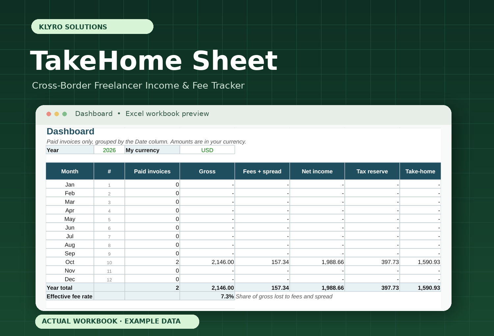

TakeHome Sheet: an Excel freelancer income and fee tracker.
See estimated take-home amounts after platform charges, payment fees and currency conversion. Log invoices, compare payment routes and work backwards from what you want to keep.
Know what each invoice may actually earn you.
TakeHome Sheet is an Excel workbook for freelancers receiving local or international payments. It keeps the inputs visible and lets you edit fee and exchange-rate assumptions.
- Track up to 200 invoices and their payment status.
- Estimate processing fees, currency conversion, tax reserve and take-home amounts.
- Review monthly gross income, fees and net income on a dashboard.
- Calculate a quote by starting from your target take-home.

Actual Excel workbook preview · Example data
Built for common cross-border freelancer workflows.
Invoice log
Keep an organized record of up to 200 invoices, including payment status and estimated fee deductions.
Quote calculator
Enter the amount you want to keep and estimate the invoice amount necessary to cover your assumed fees.
Editable fee profiles
Set payment-route costs, exchange rates and tax reserve percentages based on your own situation.
Before you download
Does TakeHome Sheet connect to PayPal, banks or marketplaces?
No. It is a manually updated Excel spreadsheet. You enter invoices and your own payment fee and exchange rate assumptions.
Does it calculate official taxes or up-to-date payment provider fees?
No. Fee defaults are examples and tax reserve percentages are editable estimates. Check current provider schedules and seek professional tax guidance if needed.
Will it work in Google Sheets?
The product is provided for Microsoft Excel as an .xlsx workbook. Google Sheets compatibility is not promised.
Can I try something first?
Yes. The separate free TakeHome Net Income Calculator estimates a single invoice's take-home and how much to quote, using editable assumptions.
See the take-home calculation first.
The free Excel calculator is a smaller entry point. TakeHome Sheet adds invoice logging, editable fee profiles and a monthly dashboard.
Explore free calculatorBuy the full workbook · $19